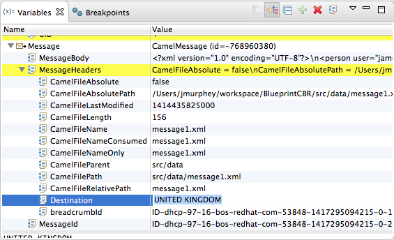

When the Camel debugger hits a breakpoint, Variables view displays the values of all variables available at that point in the routing context. Some variables are editable, allowing you to change their value. This enables you to see how the application handles changes in program state.
![[Note]](imagesdb/note.png) | Note |
|---|---|
Not all variables are editable. The context menu of those that are displays the option, . |
To change the value of a variable:
If necessary, start up the debugger. See Running the Camel Debugger.
In Variables view, select a variable whose value you want to change, and then click its Value field.
The variable's value field turns a lighter shade of blue, indicating it is in edit mode.
Note Alternatively, you can right-click the variable to open its context menu, and select to edit its value.
Enter the new value and then click Enter.
Console view displays an INFO level log entry noting the change in the variable's value (for example,
Breakpoint at node to1 is updating message header on exchangeId: ID-dhcp-97-16-bos-redhat-com-52574-1417298894070-0-2 with header: Destination and value: UNITED KINGDOM).Continue stepping through the breakpoints and check whether the message is processed as expected. At each step, check Debug view, Variables view, and the Console output.